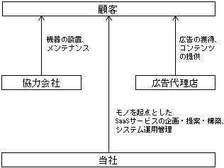
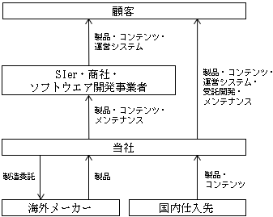
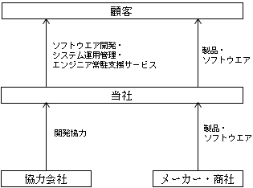

(1) 連結経営指標等
(注) １．当社は、2021年３月31日付で当社の連結子会社であるTRANZAS Asia Pacific Pte. Ltd.の全株式を譲渡したことにより連結子会社が存在しなくなったため、第28期より連結財務諸表を作成しておりません。そのため、第28期、第29期及び第30期の連結経営指標等の推移については、記載しておりません。
２．従業員数欄の〔外書〕は、臨時従業員数の年間平均雇用者数(１日８時間換算)であります。
３．第26期及び第27期連結会計年度の潜在株式調整後１株当たり当期純利益金額については、潜在株式が存在するものの、１株当たり当期純損失であるため、記載しておりません。
４．第26期及び第27期連結会計年度の株価収益率については、１株当たり当期純損失であるため、記載しておりません。
(注) １．持分法を適用した場合の投資利益については第26期及び第27期は連結財務諸表を作成しているため、また、第28期、第29期及び第30期は関連会社が存在しないため記載しておりません。
２．潜在株式調整後１株当たり当期純利益については、潜在株式は存在するものの１株当たり当期純損失であるため記載しておりません。
３．株価収益率については、１株当たり当期純損失であるため記載しておりません。
４．１株当たり配当額及び配当性向については、配当を実施していないため記載しておりません。
５．第26期及び第27期については、連結財務諸表を作成しているため、キャッシュ・フロー計算書に係る各項目については記載しておりません。
６．従業員数の〔外書〕は、臨時従業員数の年間平均雇用者数(１日８時間換算)であります。
７．2021年７月の台湾支店の閉鎖及び2021年11月の人員削減の影響により、第28期の従業員数は大幅に減少しております。
８．最高株価及び最低株価は、2022年４月４日より東京証券取引所(グロース)におけるものであり、それ以前は東京証券取引所(マザーズ)におけるものであります。
９．「収益認識に関する会計基準」(企業会計基準第29号 2020年３月31日)等を第29期の期首から適用しており、第29期以降に係る主要な経営指標等については、当該会計基準等を適用した後の指標等となっております。
当社は、1995年１月に現代表である藤吉英彦が大手通信会社の代理店業務及びPHS販売業務を目的として有限会社アイ・ディー・ディーを設立し、1997年８月に業容拡大及び発展を目指して株式会社トランザスに組織変更及び商号変更をいたしました。
1999年９月に通信に関するノウハウを活かして、集合住宅にインターネット接続のための機器と通信を提供するインターネットマンションサービスを開始し、そのための機器購入を目的として台湾メーカーとの取引を開始しております。
その後、台湾メーカーが取扱うセットトップボックス(STB)の営業協力を行ったため、当社にSTBの引き合いがあり、ソフトウエアの開発を外注し納品をいたしましたが、ソフトウエア開発の外注や製造・開発における分業制が高コストに繋がったことから、自社で製造からサービス提供に至るまで一気通貫で行う垂直統合モデルが必要であると考え、2002年７月よりSTBの開発及び製造を開始し、拡大しつつあったIPTVサービス(注１)の市場に参入しております。STBの開発製造においてファームウェア(注２)及びミドルウェア(注３)の開発ノウハウを蓄積し、2006年11月より本格的にIoT機器メーカーとしてスタートいたしました。
2019年３月に株式会社NSCホールディングスと合弁会社株式会社ピースリーを設立し、メディアPlatform事業を開始いたしました。2021年１月期において、合弁会社株式会社ピースリーのメディアPlatform事業を当社の主要事業として掲げ、従来からのIoT機器の自社設計製造をそれに組み合わせる方針に転換したことに伴い、2020年５月には合弁会社株式会社ピースリーを吸収合併いたしました。
2020年８月には、パートナー企業と共同してメディアPlatform事業の第１弾である美容サロン向けサイネージサービスの提供を開始いたしました。
2022年４月には、モノづくりを基盤としたサービスとしての技術価値を提供する事を明確に定義すべく株式会社ピースリーから株式会社トラース・オン・プロダクトに商号変更をいたしました。
2022年12月には、流通小売店舗を対象とした、DX店舗活性プロダクト新製品「店舗の星」をリリースし、2023年１月には、電力削減ソリューションAIrux8の提供を日本市場向けに開始いたしました。
(注) １．IPTVサービスは、Internet Protocol TeleVision(インターネット・プロトコル・テレビジョン)の略で、インターネットに利用されている代表的な通信技術であるIPを使って送られる映像などを、テレビのように楽しむことができるサービスです。光ファイバーなどのネット回線と接続されたテレビで、リモコンを操作することにより、選択した動画などをユーザーが好きなときに視聴することができます。
２．ファームウェアとは、端末本体に組み込まれ、端末の動作スピードや電力量の制御等、本体自体の制御のために動作するソフトウエアをいいます。
３．ミドルウェアとは、ハードウェアやコンピュータの機能を制御するソフトウエアであるオペレーティングシステム(OS)とアプリケーションソフトウエア(注４)との中間(ミドル)に位置するソフトウエアで、アプリケーションソフトウエア開発の際に複数のアプリケーションソフトウエアに共通する機能の開発を省くことができ、システムの開発や導入の効率化につなげることができます。データベース管理システムやサーバーと端末間の中継制御を行うソフトウエア等があります。
４．アプリケーションソフトウエアとは、特定の目的のために設計・開発されたソフトウエアであり、利用者が操作や入力を行うことで、利用者が要求する機能を提供するソフトウエアです。
５．STBはセットトップボックスの略称であり、機能特化型のコンピュータ(単機能コンピュータ)となります。主にはケーブルテレビ放送や衛星放送、地上波テレビ放送、IP放送(注８)などの放送信号を受信して、一般のテレビで視聴可能な信号に変換する端末として利用されております。近年のIoT化により機能特化型のコンピュータとして利用される等用途が広がっております。
６．IoTとは、Internet of Thingsの略で、コンピュータなどの情報・通信機器だけでなく、世の中にある様々なモノに通信機能を持たせ、インターネットに接続させることにより、自動制御や遠隔計測などを行うことをいいます。
７．IP放送とは、これまでのテレビのように番組表の編成に沿って、さまざまなチャンネルの番組(多チャンネル放送)を楽しむことができるサービスです。衛星放送や、ケーブルテレビ(CATV)などと同じように、ネット回線を使って多チャンネル放送を利用することができます。
８．ウエアラブルデバイスは、腕や頭部など、身体に装着して利用することを想定した端末の総称です。当社はエンタープライズ向けに身体(主に腕)に装着するウエアラブルデバイスを提供しております。当社のウエアラブルデバイスは、特定の用途に限定して利用するのではなく、アプリケーションソフトウエアによって様々な用途に利用可能なところに特徴があります。また、ディスプレイサイズとバッテリー容量を大きくとっているため長時間に及ぶ作業にも利用可能となっております。
９．ルームコントローラーは、ホテル等の宿泊施設において、客室に備え付けてある家電を宿泊客がスマートフォン等を利用してコントロールすることを可能としたり、施設運営者側で客室の在室状況を確認したり、遠隔から家電を管理することを可能とするデバイスです。これにより、施設運営者の客室へのリネンサービスを効率化いたします。
10．店舗の星は、ECの世界で極めて重要である、商品及び店舗に関する消費者評価(ソーシャルプルーフ)をネット上よりクラウドエンジンがスクレイピングし、リアル店舗に落とし込み表示する為のシステムになります。「店舗の星」を取り付ける前と取り付けた後の効果計測が可視化出来るクラウドダッシュボードを有しており、店舗のPOSデータと連携する事で店舗運営のBIツールとして極めて大きな役割を果たしてまいります。
11．AIrux8は、人感センサーを組み込んだ集中コントローラー装置を通して、施設内の混雑状況や不在状況等のデータを取得し、AIで解析します。そして状況に応じて、施設内に設置されたIoT照明設備と通信し、各照明のエリアグループ毎に時間帯、営業稼働日、季節により照明の明るさを自動制御します。また、施設内空調設備の設定温度もAIで現状把握・予測して自動調整することができ、消費電力を抑制します。
当社は、「お客様への“真の価値提供”を第一に モノづくりを通じVirtualとRealを融合 最適化した新しい社会の礎を創造する」を経営理念とし、モノは買う物から、サービス提供に付帯するプラットフォームになるべきであり、モノの価値は物体価値になくサービス価値にあると考えております。当社は、「モノづくり4.0」(当社ウェブサイト「モノづくり4.0」参照)の価値の主体から、本当に求められる製品を０から組上げられる調合士であり、今後の社会が待ち望んでいるサービス価値を提供しております。
当社は、事業区分の見直しを行い、当事業年度より報告セグメントを変更することといたしました。従来の「ターミナルソリューション事業」の単一セグメントから「TRaaS事業」「受注型Product事業」「テクニカルサービス事業」の３つの報告セグメントに変更いたしました。
BtoB市場向けに、お客様の価値を最大化させるための適切なIoTソリューションと最適なモノの選定をし、そのモノを起点としたSaaSサービスを提供しております。モノは、ファブレス型で自社設計開発した製品特性に応じた海外ネットワークを選定することにより、価格競争力のある製品となっております。お客様がIoT、DXを進めるうえでのモノの導入コストの高さを、当社のテクノロジーで解消すべく、今後SaaSサービスを更に拡充してまいります。
IoT技術を用いた製品・ソリューションの企画、設計、製造からの運用・保守サポートまで完全垂直統合を実現し、お客様（VAR※）が望む製品を柔軟に提供いたします。
※VAR：Value Added Reseller 付加価値再販パートナー
当社製品に価値を付加し再販する事業者をVARとして定義し、そのVARと協業することで事業拡大を図っております。VARが当社製品に価値を付加し、様々なマーケットや顧客に横展開することで、当社製品は新たなマーケットに拡販されております。
基幹業務システム等のアプリケーションソフトウエアの受託開発、システム運用に必要なパソコンやサーバー等の提供及びメンテナンス、開発したソフトウエア及びシステムのメンテナンスや常駐型保守に向けたエンジニア派遣サービスを提供しております。
当社は、IoT機器の開発・製造で培ったモノづくりの知見から、最適なモノの選定をし、そのモノを起点としたSaaSサービスを、様々な人が集まる場所のロケーションオーナー、パートナー企業に向け、そのニーズに合わせた企画提案、製品開発から、総合的なロケーションメディアの構築まで、顧客の価値が最大化する最善のIoTソリューションの提案を当社単独で行うことが可能であります。
当社は、IoT製品の設計から製造までを一気通貫で行う垂直統合型のビジネスを展開しており、IoT製品に組み込まれるソフトウエア及びパートナー企業がIoT製品の最終利用者にサービス提供をするために必要となるシステムの開発も行っております。
ソフトウエア開発を内製化することで顧客の要望に柔軟に対応することができ、また、ハードウェアの開発に当たっては、部材の選定から関わり主に中国の電子機器の受託メーカー(EMS)に製造委託することで、顧客にとっての機能最適化を図るとともに、低コスト化を図っております。
当社は、製品の設計段階から製品開発に加わり、部品レベルでのコスト削減を行った上で、製造委託を実施しているため、低製造コストを実現しております。また、製品開発に必要なソフトウエアの知的財産権を社内に蓄積しており、それを横展開することでソフトウエアの開発を省力化でき短期間・少人数での開発を実現しております。
これにより、競合が少ない小ロットでの生産にも対応しております。
当社は開発してきたソフトウエアの知的財産権を社内に蓄積しております。そのため、過去に開発したソフトウエアの転用と開発のノウハウを活かして、短期間で安定稼働を実現するIoT製品向けソフトウエアやシステムの開発を可能としております。
また、当社は開発が複雑な映像配信用ターミナルのソフトウエアを数多く開発しておりますが、そのソフトウエアはウエアラブルデバイスやデジタルサイネージといった他分野のターミナルやシステム構築に展開することができます。これにより、IoT製品をはじめとした通信機能を持つターミナルを早期に開発していくことが可能であります。
サービス別の事業の系統図は、次のとおりであります。

② 受注型Product事業

③ テクニカルサービス事業

該当事項はありません。
2024年１月31日現在
(注) １．従業員数は就業人員数であります。
２．従業員数欄の〔外書〕は、臨時従業員数の年間平均雇用者数(１日８時間換算)であります。
３．平均年間給与は、賞与及び基準外賃金を含んでおります。
４．当社では、報告セグメントごとの経営組織体系を有しておらず、同一の使用人が複数の事業に従事しております。
労働組合は結成されておりませんが、労使関係は安定しております。
当社は、「女性の職業生活における活躍の推進に関する法律（平成27年法律第64号）」及び「育児休業、介護休業等育児又は家族介護を行う労働者の福祉に関する法律（平成３年法律第76号）」の規定による公表義務の対象ではないため、記載を省略しております。